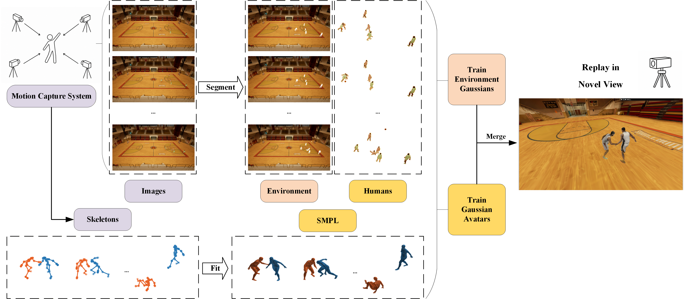

Overall Framework
The motion capture system provides multi-view images and human skeletons, which are fitted to SMPL parameters. The images are segmented into static environment and dynamic human components. Environment Gaussians and Gaussian avatars are trained separately, then merged in the viewer for interactive free-viewpoint replay.